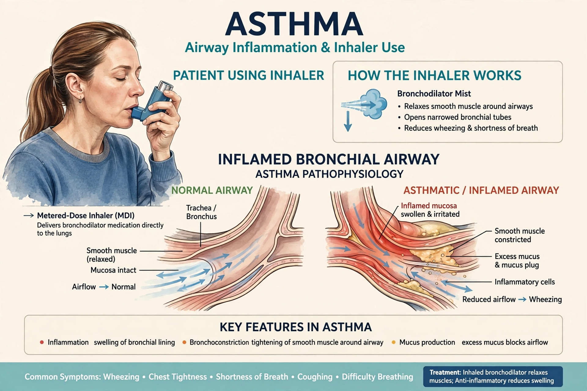

Asthma is a long-term inflammatory disease of the airways of the lungs, characterized by variable and recurring symptoms, reversible airflow obstruction, and easily triggered bronchospasm. Symptoms include wheezing, coughing, chest tightness, and shortness of breath.

Asthma results from a combination of genetic and environmental factors. Triggers include allergens, cold air, exercise, respiratory infections, smoke, and stress.
Chronic airway inflammation, often eosinophilic and allergy-related, causes airway hyperresponsiveness and remodeling; acute attacks narrow the airways by bronchoconstriction, edema, and mucus.
Long-term control relies on inhaled corticosteroids; severe exacerbations may need systemic steroids such as prednisone or dexamethasone. Short-acting beta-agonists such as salbutamol relieve acute symptoms.
Asthma affected roughly 260 million people in 2019 and caused about 460,000 deaths that year. It commonly begins in childhood.